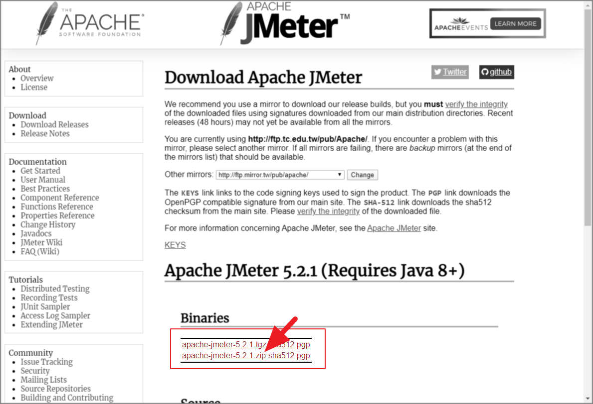
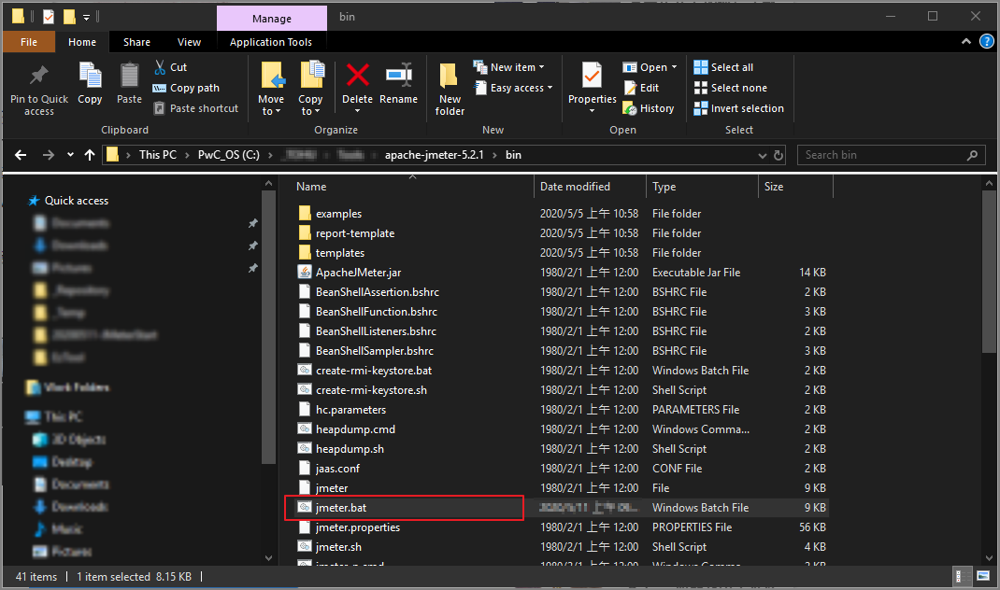
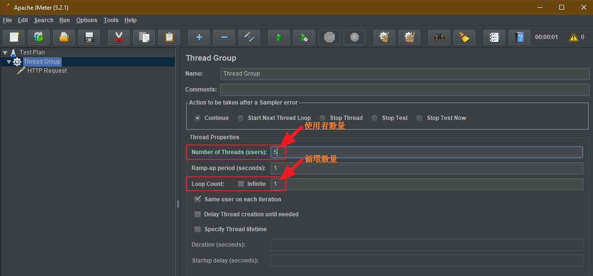
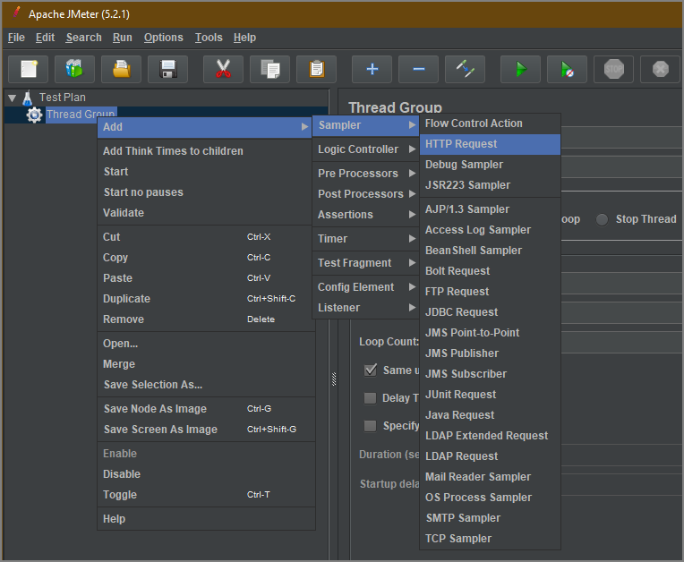
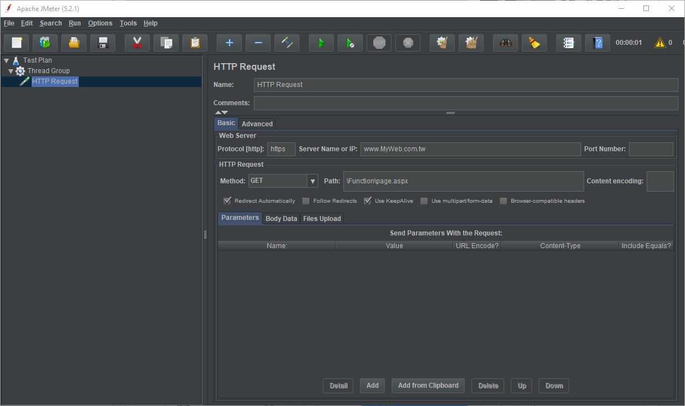
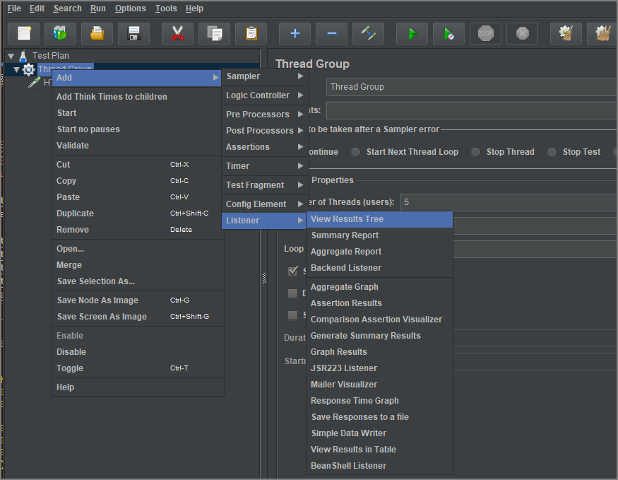

JMeter
JMeter 是開源軟體 Apache 基金會下的一個負載測試工具，用來測試部署在伺服器端的應用程式的效能。
什麼是負載測試？舉個例子，你開了一個網路商店，興沖沖地準備雙十一大幹一把，沒想當天活動的時候大量用戶一訪問你的網店，你的網店就掛了，那怎麼辦？辦法就是在實際搞活動之前，先測試一下以確認系統能承受那麼多少用戶，當然測試的時候我們不需要請真正的這麼多實際用戶，否則得花多少錢啊！
JMeter 能夠模擬大量用戶訪問的軟體，而且它是開源的，不花錢！
安裝
下載 可以在 JMeter 官方網站 ( 如下圖 ) 後，再切換到 Download Releases 頁面下載。

下載 .zip 檔案。 
解壓縮後執行 bin\jmeter.bat 批次檔就可以開啟 JMeter 的圖形介面 
JMeter 的圖形介面

未能正常開啟 JMeter 圖形介面
執行 jmeter.bat 後若未開啟 JMeter 的圖形介面，並且出現以下訊息:
Not able to find Java executable or version. Please check your Java Installation.
這是因為 JMeter 是由 JAVA 撰寫開發，所以安裝 JDK 到電腦，可以自行到 ORACLE 下載安裝包。
開始使用
主要概念
測試計畫 ( Test Plan ):
所有的測試工作都基於測試計劃進行，個別專案中僅能具備單一測試計畫，也就是做為專案的全局設置。執行緒組合 ( Threads(Users)\Thread Group ):
相當於許多執行緒的組合，在個別專案中有多個執行緒組合，對特定標的進行測試的各種不同呼叫的執行緒集合的概念，例如待測網站 A 及 網站 B 時，應建立兩個不同執行緒組合。HTTP 要求 ( Sampler\HTTP Request ):
HTTP 要求的原理是通過建立多條 HTTP 要求，從而達到測試網站負載及效能的作用，最常見的即是 HTTP 要求這類，其他還有資料庫測試、FTP 測試等。
1. 新增 Thread Group

- 設定測試數量
每次測試的數量，是透過 執行緒數量 Number of Threads(users) 及 循環數量 Loop Count 的乘數。 
2. 新增 HTTP Request

- 設定 HTTP Request 
完整設定可以參考 使用手冊的 18.1.2 HTTP Request 的說明，簡單說明必要的參數如下：
- Basic
- Web Server
- Proptocol[http]: 可以填入到 HTTP 及 HTTPS 兩種不同的協議。
- Server Name or IP: 網頁的伺服器名稱或是 IP 位址。
- Port Number: 埠號，預設 HTTP/HTTPS 的 80 埠號，可以設定自訂的不同埠號。
- HTTP Request
- Method: 各個不同呼叫模式，例如 Get, Post 方法。
- Path: 路徑，待測試的網址路徑。
- Redirect Automatically: 勾選後，在網頁轉址時，將轉址與原請求視窗同一請求。
- Follow Redirects: 勾選後，在網頁轉址時，將轉址視為個別不同請求。
- Use KeepAlive: 設定 HTTP 呼叫的 Keep-Alive 設定。
- Parameters: 提供設定網頁後綴參數。
- Web Server
3. 新增監聽器
執行測試後，如何收集測試結果，可以透過監聽器在執行過進行結果收集，以下列示兩種不同的監聽器，分別以樹狀結構及列表形式表示測試結果。
- View Results Tree 
- View Results in Table